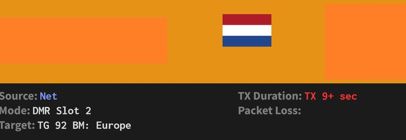
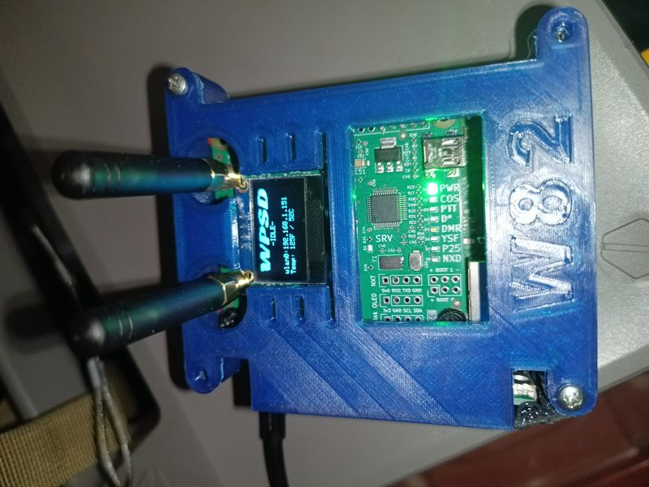
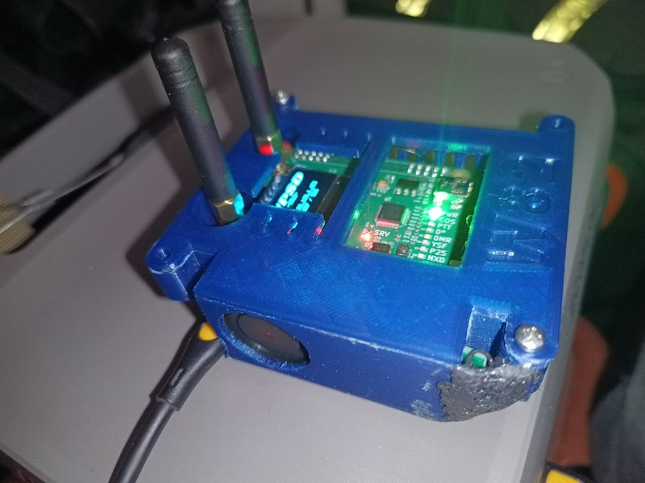
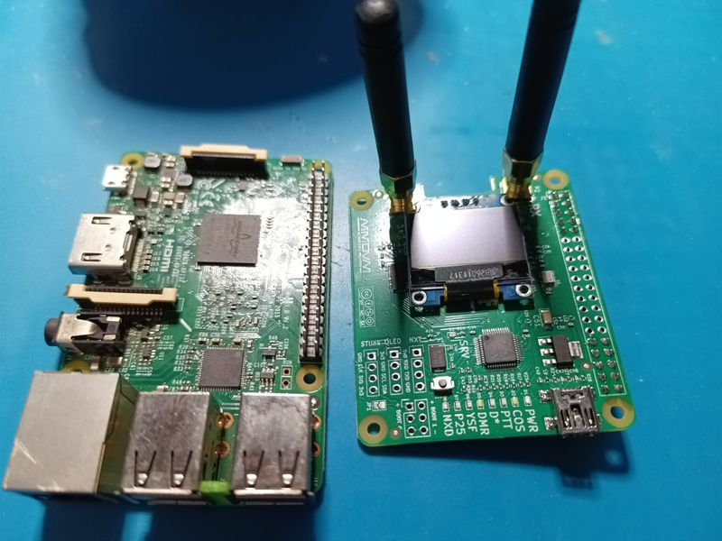
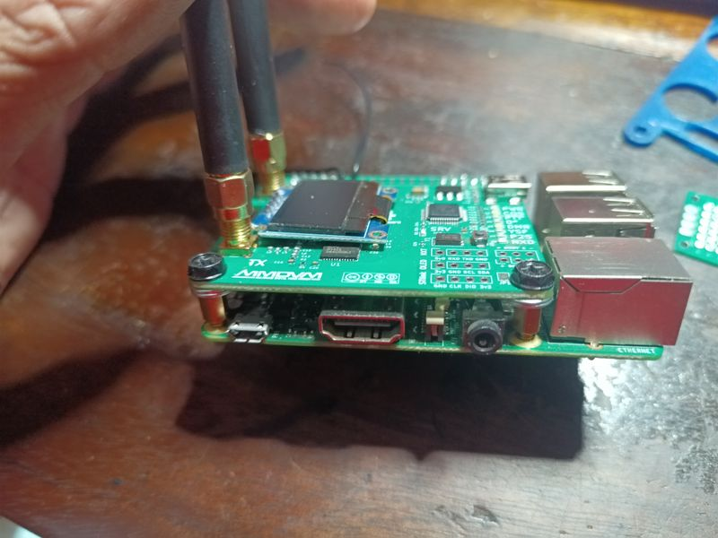
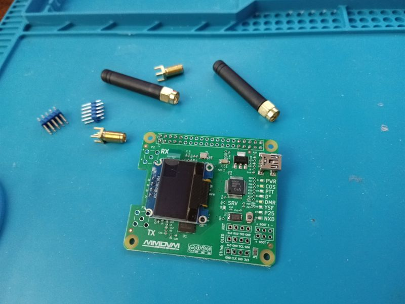
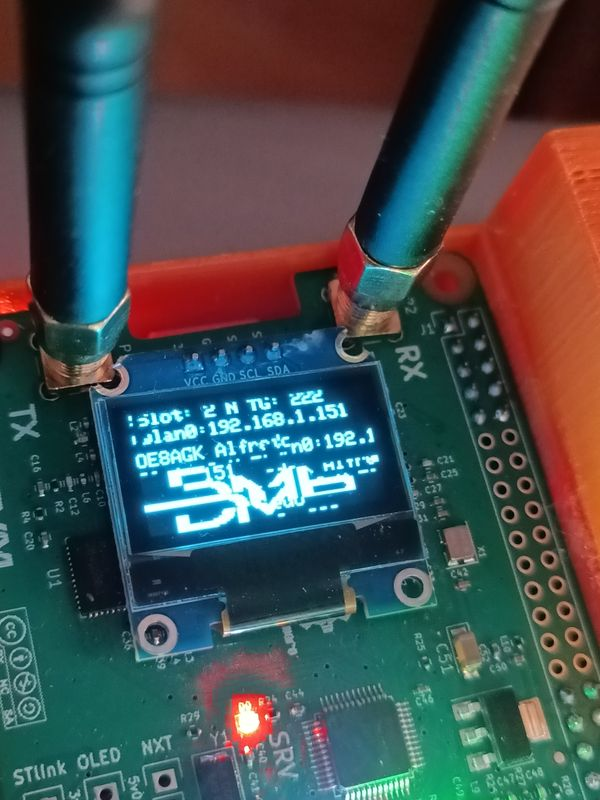
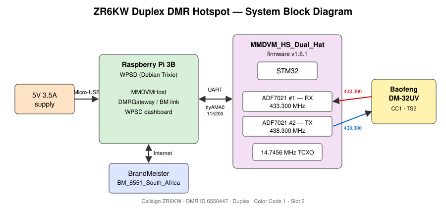
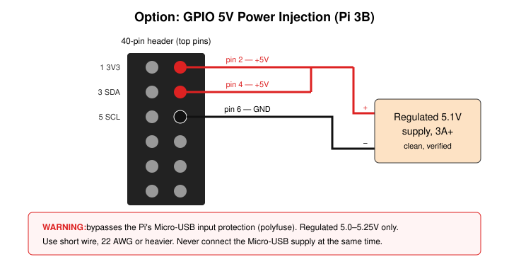

Digital Radio Hotspot
A small home-built box that lets my handheld digital radio talk to radio amateurs around the world, using the internet to cover the distance.
On its own, a handheld radio reaches a few kilometres at best. A hotspot works like a tiny personal gateway. The handheld talks to it over a short radio link, and the hotspot carries the conversation over the internet to BrandMeister, a network that links thousands of digital radios worldwide. Mine is built from a Raspberry Pi (a credit-card-sized computer) with a radio board on top, in a 3D-printed case with a cooling fan. It runs under my amateur radio callsign, ZR6KW.
Where it's at
- Working day to day: it links my radio to the network and passes calls both ways.
- Power problem found: the hotspot kept going "deaf" because the Pi wasn't getting enough voltage. Proper testing showed the culprit was the 3.5 A wall adapter, not the cable. Three different cables made no difference. A portable power station's USB port ran it with no dips at all, even while transmitting. A proper 5.1 V Raspberry Pi supply is the fix for mains power.
- Fan and temperature control: the case fan is now speed-controlled by the Pi, based on its temperature. The dashboard also shows a count of voltage dips next to the CPU temperature, so I can see at a glance whether a power source is any good.
- Still an occasional freeze: now and then the radio board locks up until its software is restarted. On a bad power source this happened all the time. The automatic watchdog that should do this by itself still needs fixing.
- Fine-tuning left: the receive side is calibrated. To check the transmit side properly I need a cheap software-defined radio (SDR) to measure it.


Photos












Build your own: step by step
A rough outline of how I set mine up. The frequencies below are mine, so use ones allowed by your own licence and local band plan.
- Get licensed and registered. You need an amateur radio licence and callsign (ICASA in South Africa), a DMR ID from radioid.net, and a BrandMeister SelfCare account, where you set a hotspot password.
- Gather the parts. A Raspberry Pi 3B, an MMDVM_HS_Dual_Hat (the dual version allows full duplex), a microSD card, a proper 5.1 V Raspberry Pi power supply (a phone fast charger is not good enough, see Power testing below) with a short, thick Micro-USB lead, and a DMR handheld (mine is a Baofeng DM-32UV). A case with a fan is optional.
- Assemble. Fit the hat onto the Pi's GPIO header and screw on both antennas. Always have antennas attached before the board can transmit.
- Install WPSD. Download the WPSD image from wpsd.radio and write it to the microSD card with Raspberry Pi Imager or balenaEtcher. Set up Wi-Fi (or plug in a network cable) as WPSD's instructions describe, then boot the Pi.
- Open the dashboard. From a browser on the same network, open the hotspot's address (WPSD's instructions give it) and go to the configuration page.
- Configure the hotspot.
- Callsign and DMR ID, and your timezone
- Modem: MMDVM_HS_Dual_Hat on the Pi's GPIO, in duplex mode
- Frequencies: RX 433.300 MHz, TX 438.300 MHz
- DMR mode on, Color Code 1
- Network: BrandMeister, the master for your country, and your hotspot password
- Secure it. Change the default passwords, turn on WPSD's firewall option, and keep the system updated.
- Program the radio. Add a digital channel that mirrors the hotspot: receive 438.300 MHz, transmit 433.300 MHz, Color Code 1, Timeslot 2, TX Admit Always. Then add the talkgroups you want to use.
- Calibrate receive. Use WPSD's calibration tool to find the RX offset with the lowest error rate (details under Technical details).
- Test. Make a call to BrandMeister's echo ("Parrot") service and check you hear yourself back, then watch calls come in on the dashboard.
- Make it reliable. Check the Pi isn't short of power (
vcgencmd get_throttledshould show0x0) and turn on the WPSD Services Watchdog so a stuck modem restarts itself. - Add fan control (optional). If your case has a fan, run it from a GPIO pin with temperature-based speed control (details under Cooling and temperature). Keep any add-ons in
/opt, never in WPSD's own folders.
Technical details
Hardware
| Component | Detail |
|---|---|
| Single-board computer | Raspberry Pi 3B |
| Modem | MMDVM_HS_Dual_Hat: dual ADF7021 (one RX, one TX) for true duplex |
| Modem firmware | v1.6.1 |
| Reference oscillator | 14.7456 MHz TCXO |
| Pi to modem link | GPIO UART, /dev/ttyAMA0 at 115200 baud |
| Handheld radio | Baofeng DM-32UV |
| Power | Micro-USB. Stable from an EcoFlow River 2 Pro USB-A port. Not stable from a 5 V / 3.5 A Quick Charge wall adapter (see Power testing) |
| Cooling | Case fan on GPIO18, PWM speed control from CPU temperature |
| Network | BrandMeister, master BM_6551_South_Africa |


Software
- WPSD, current Debian Trixie-based image (fresh reinstall)
- Set up during the reinstall: modem type, timezone
Africa/Johannesburg, BrandMeister network, firewall and password hardening, persistent journald logging - Pi 3B UART: Bluetooth must not hold the hardware UART. Check
dtoverlay=disable-bt(orpi3-disable-bt) in/boot/firmware/config.txtand thathciuartis disabled. WPSD sets this by default, but it's worth confirming after updates. - PHP workers raised from 5 to 10 (
pm.max_childrenin/etc/php/8.4/fpm/pool.d/www.conf). The dashboard refreshes a lot in the background and kept hitting the limit. Page loads dropped from about 3 s to under 2 s.
RF configuration
| Parameter | Hotspot | Handheld (mirror image) |
|---|---|---|
| RX frequency | 433.300 MHz | 438.300 MHz |
| TX frequency | 438.300 MHz | 433.300 MHz |
| Color Code | 1 | 1 |
| Timeslot | 2 | 2 |
| RXOffset | −75 Hz (calibrated) | |
| TXOffset | −75 Hz (estimated, not measured) | |
| DMRTXLevel | 45 (trial value) | |
| TX Admit | Always (Color Code Idle can cause "Channel Busy" while network traffic is passing) |
Relevant MMDVMHost settings (credentials omitted):
[General]
Callsign=ZR6KW
Id=6550447
Duplex=1
[Info]
RXFrequency=433300000
TXFrequency=438300000
[Modem]
Port=/dev/ttyAMA0
UARTSpeed=115200
RXOffset=-75 ; calibrated, BER 0.09%
TXOffset=-75 ; estimated from RXOffset - needs SDR verification
DMRTXLevel=45 ; trial value - needs SDR verification
[DMR]
Enable=1
ColorCode=1Calibration
RX offset (done), with the WPSD calibration tool:
- Select DMR mode, click Start and wait for the status indicator to go green.
- On the radio, set TX Admit to Always temporarily and hold PTT on the normal hotspot channel (not VFO).
- Step the offset in 100 Hz, then 50 Hz, then 25 Hz steps, chasing the lowest BER.
- Run long enough to check the best offset doesn't drift as the board warms up.
- Save Offset, Stop, then set TX Admit back.
Result: BER 0.09% at RXOffset −75 Hz. DMR is comfortable up to about 1%.
TX offset and deviation (open): the calibration tool uses the radio as the signal source, so it only measures RX. TXOffset was set to −75 on the assumption that both ADF7021s share the same TCXO and the two frequencies are close, and DMRTXLevel was trialled at 45. Neither of these were actually measured. Proper TX calibration needs an RTL-SDR (or a spectrum analyser) to check the actual transmitted frequency and deviation.
Troubleshooting log
Issue A: modem lock-up (intermittent, still open)
- Symptom: the dashboard freezes on
TX: DMR, the radio shows "link timeout" on PTT, and network traffic on the dashboard doesn't reach the radio. It tends to happen around transmitting. - Diagnosis: the modem reports it is transmitting and never reports completion, so it is stuck at the STM32/firmware level.
- Workaround:
sudo systemctl restart mmdvmhostrestores it every time. - Power: on a bad power source this happened all the time (see Power testing below). On a good source it is much rarer, but lock-ups still happen now and then.
- Watchdog trial: I tried a small power watchdog that logged every voltage dip and restarted MMDVMHost and DMRGateway once power had been steady for 5 seconds and the hotspot had been quiet for 10. It worked, with services back up and logged into BrandMeister about 33 seconds after each restart. I removed it once the cause was clear, because it only hid the power problem.
- To do: fix the WPSD Services Watchdog so it restarts the modem automatically. A systemd timer that checks the modem and restarts it is a fallback.
Issue B: carrier but no DMR decode on the handheld (open)
- Symptom: the radio's RX LED and signal meter respond to the hotspot's 438.300 MHz transmission, but no audio or callsign is decoded, sometimes as intermittent drop-outs.
- Note: carrier detect and the S-meter only show there is RF. They don't show the modulation can be decoded.
- Tried: TXOffset −75 and DMRTXLevel 45, with no fix.
- Found (9 Oct): during one of these "deaf" spells the software was working fine. MMDVMHost was still taking in network traffic with 0% packet loss and passing it to the board, and DMRGateway stayed logged in. At the same time the kernel logged 106 under-voltage warnings in under three hours. So the board was keying up but sending something the radio couldn't decode. A restart reloads the radio chips' settings (frequency, offsets, levels), which is why it brings the hotspot back. Power is the main cause.
- Next: measure TX frequency and deviation with an RTL-SDR, to rule out the TX settings as well.
Resolved: the flashing red SVC LED is just the firmware's normal heartbeat. A forum post had me thinking it was a fault.
Power testing: what was stable and what wasn't
Early on, vcgencmd get_throttled showed 0x50000 (under-voltage and throttling had happened since boot) and at times 0x50005 (happening right then). I first thought a better cable had fixed it. It hadn't. On 9 October I tested each power source properly: boot the Pi, let it settle, then sample the under-voltage flag once every 2 seconds for 3 minutes (90 samples), with the hotspot idle and then passing busy network traffic.
| Power source | Samples under-voltage | Result |
|---|---|---|
| EcoFlow River 2 Pro, USB-A port (tested 3 times) | 0 of 90, every time | Stable No dips while transmitting busy traffic. Only two short dips (about 6 s) during boot. |
| 5 V / 3.5 A Quick Charge wall adapter | 15 of 90 | Not stable 12 dips in the first 4 minutes, and they kept coming |
| Wall adapter with a third cable | 79 of 90 | Not stable Low almost all the time, even with the hotspot idle |
| Desktop PC USB port | 61 of 90 | Not stable Dips started within a second of the hotspot keying up |
Things that made no difference:
- Swapping cables. Three different Micro-USB cables on two wall adapters all dipped, every 10 to 20 seconds, even with the hotspot idle.
- Unplugging and plugging back in. Dips came straight back after the reboot.
- Contact cleaner on the Micro-USB socket. The dips came back as soon as it went back on the wall adapter. Clean runs on the EcoFlow also rule out a worn socket or a bad input fuse on the Pi.
What it showed: an idle Pi 3B with the hat draws only about 0.4 to 0.5 A, so a 3.5 A rating means little. A Quick Charge phone adapter running in plain 5 V mode can sit at about 5.0 V or a little under, and the Pi 3B flags under-voltage below about 4.63 V. That leaves very little for the cable and connectors to lose. The EcoFlow's USB-A ports (5 V, 2.4 A each) regulate properly, so all three behave the same. A desktop USB port is only meant for 0.5 to 0.9 A, which is about what the Pi and hat draw while transmitting.
Why it mattered: load spikes (at boot, and from the dual hat while transmitting) caused brief voltage sags at the Pi. These scramble the radio chips' settings (Issue B) and can glitch the UART to the STM32 and leave the modem wedged (Issue A). Cheap USB cables do make it worse, because their thin 28 to 30 AWG power wires drop more voltage, but here the adapter was the main fault.
Still open: a dip about once an hour. On a better source the dips are rare but not gone. From 11 to 13 October there was one single dip at about the same minute past the hour (first about 22 minutes past, later about 42 minutes past), with the seconds creeping a little later each time. Not every hour had one. Nothing on the Pi runs at those times and the hotspot wasn't transmitting. The hotspot rode through each one without a service restart. A regular pattern like that points at the power source doing something on a timer, such as a charger or power bank.
Cable tips, if you do need one: look at the printing on the cable. Something like 28AWG/1P + 24AWG/2C means 24 AWG power wires, which is fine. If nothing is printed, assume thin 28 AWG. Keep it short, under 1 m (30 to 50 cm is ideal). Easiest of all is a 5.1 V supply with its own fixed lead, like the official Raspberry Pi 3 supply.
Reading get_throttled: bits 0–3 mean "happening now" (0x1 under-voltage, 0x2 frequency capped, 0x4 throttled, 0x8 soft temperature limit). Bits 16–19 mean "has happened since boot". The flags only clear on reboot. Watch them live with watch -n 1 vcgencmd get_throttled.
GPIO power injection (tried, not kept): feeding regulated 5 V straight into header pins 2/4 (5 V) and 6 (GND) avoids the Micro-USB connector and cable losses, but it also bypasses the Raspberry Pi's built-in input protection (its polyfuse). That risk wasn't worth keeping, and the real fault turned out to be the adapter, so the Pi is back on Micro-USB power.


Cooling and temperature
The 3D-printed case has a cooling fan, now driven by the Pi itself rather than running flat out all the time.
| Setting | Value |
|---|---|
| Fan pin | GPIO18, software PWM at 100 Hz (Python with lgpio) |
| Turns on | 50 °C |
| Turns off | Below 45 °C (the 5 °C gap stops it flicking on and off) |
| Speed | 30% at 50 °C, rising to 100% at 70 °C. Below about 30% many small fans stall. |
| Start-up | Full speed for 1 second to get the fan spinning from stopped |
| Fail-safe | If the controller stops or can't read the temperature, the fan is left fully on (tested) |
| Temperatures seen | About 49 to 60 °C in normal running, with the fan at around 30% |
It runs as a systemd service (hotspot-fan.service) from /opt/hotspot-fan/, and logs every speed change to its journal.
Voltage Errors on the dashboard. Because this hotspot moves around and is fussy about what it's plugged into, I added a Voltage Errors card next to CPU Temp on the WPSD dashboard:
- Plain number when there have been no dips since boot
- Orange once there has been a dip since boot but the supply is fine right now
- Red, "LOW NOW" while the Pi is under-voltage at that moment
- Hovering shows whether the supply is OK now and the time of the last dip
A small service follows the kernel messages and records each "Undervoltage detected" event, because WPSD's own tasks keep clearing the system log. The count resets on reboot, and one or two dips during boot are normal. What matters is the number climbing while it runs.
CPU Temp card fix. WPSD's dashboard CSS hides any <span> inside a card's tooltip link. The stock CPU Temp card colours its value with a span, so at 70 °C (orange) and 80 °C (red) the temperature went blank, just when you'd want to see it. Both cards now use <b> for the coloured value.
WPSD wipes edited dashboard files. My first version patched WPSD's includes/hw_info.php. That was a mistake. Every 20 to 40 minutes WPSD runs a compliance check, and if any dashboard file has been changed it deletes and re-downloads /var/www/dashboard, /usr/local/bin and /usr/local/sbin and restarts the radio services. In one day that happened 21 times. Each time the dashboard gave brief 403 errors, and it deleted my original fan script, which lived in /usr/local/bin. The card is now added by a PHP-FPM auto_prepend_file (set in its own pool file under /etc/php/8.4/fpm/pool.d/) that adds it to the page as it's served, so no WPSD file is touched. Since then the checks finish in seconds with no reset.
Mobile version (12 V vehicle power)
I've also tried a mobile version of the Pi 3B and hat, powered from a vehicle's 12 V system.
- Didn't work: LM2596 and XL4015 buck modules, and a homebrew LM317 regulator. They caused RF interference in the receiver or board resets.
- Planned: vehicle 12 V → fuse → LC/ferrite input filter → Pololu D24V50F5 (or equivalent) synchronous 5 V buck → LC/ferrite output filter → Pi 3B and hat.
- No-solder alternative: a quality USB car charger with clip-on ferrites on the cable.
Useful commands
sudo systemctl restart mmdvmhost # clear a stuck modem
sudo systemctl status mmdvmhost # PID / uptime - is it the same process?
journalctl -u mmdvmhost -f # live MMDVMHost journal only
ls /var/log/pi-star/MMDVM-*.log # MMDVMHost's own detailed log
vcgencmd get_throttled # power / throttling flags
watch -n 1 vcgencmd get_throttled # catch under-voltage live
sudo dmesg | grep -i voltage # under-voltage events since boot
journalctl -u hotspot-fan # fan speed changes
vcgencmd measure_temp # CPU temperature
systemctl status hciuart # should be disabled (UART free for modem)Lessons learned
- Seeing a carrier and S-meter reading doesn't mean the DMR will decode. Check the modulation.
- Guessing DMRTXLevel and TXOffset is not calibrating them. Measure with an SDR.
- One clean
get_throttledreading doesn't mean the power is fine. Check the "since boot" bits and watch it live. - An amp rating on the adapter doesn't mean it holds 5 V. A 3.5 A phone fast charger was the fault, and a power station's plain USB port was rock solid.
- Change one thing at a time. Swapping the supply and cleaning the socket together told me nothing until I swapped back.
- Measure each power source the same way (here, 90 samples over 3 minutes) so the results compare.
- Don't bypass the Pi's power protection to work around a weak supply.
- Never edit WPSD's own files. Its compliance check wipes them and takes your add-ons with it. Keep custom things in
/optand/etc. - Don't trust forum diagnoses of LED patterns without checking the firmware's actual behaviour.
Next steps
- Get a proper 5.1 V Raspberry Pi supply for mains power, and test it the same way as the others
- Track down the source of the once-an-hour voltage dip
- Fix the WPSD Services Watchdog so a stuck modem restarts itself
- Get an RTL-SDR and calibrate TX frequency and deviation
- Keep an eye on the Voltage Errors card wherever the hotspot gets plugged in